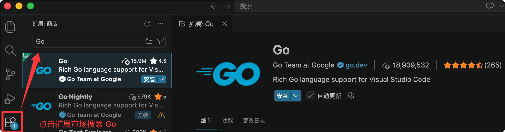
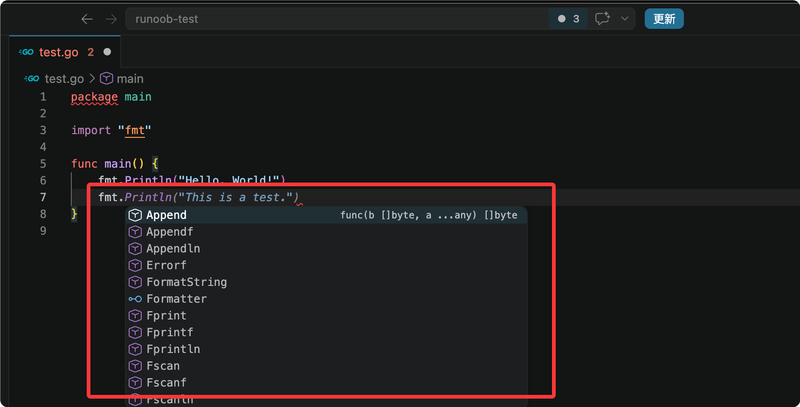
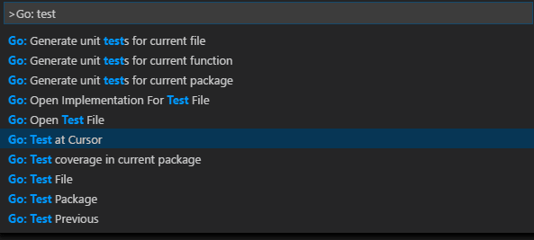

Developing Go with VSCode
Visual Studio Code (VS Code) is a free, open-source code editor developed by Microsoft that supports multiple programming languages and provides features such as code highlighting, intelligent code completion, code refactoring, and debugging.
With the official Go extension for Visual Studio Code, you can get a range of practical capabilities for Go project development, including IntelliSense, code navigation, symbol search, unit testing, and program debugging.
If you are not familiar with VS Code or haven't installed it yet, you can refer to:VSCode Tutorial。
Install the Go plugin
Open the VS Code extension marketplace and search:Go Extension for VS Code。
In the editor, click Extensions on the left, search for Go, then install the official plugin:

After installation, we can start writing Go code by enteringfmt.Try the IntelliSense feature:

IntelliSense
IntelliSense is provided by the gopls language server maintained by the official Go team. Its behavior can be customized through gopls configuration options.

1. Semantic highlighting
VS Code uses TextMate grammar-based syntax highlighting by default; to enable better semantic highlighting, turn it on in the settings.ui.semanticTokens：
"gopls": { "ui.semanticTokens": true }
2. Code auto-completion
When editing Go source code, the extension provides real-time code completion suggestions, supporting member suggestions from the current package, imported packages, and packages not yet imported; type "package name + ." to invoke method/constant hints within that package.
Shortcuts:
Ctrl+空格(⌃Space)Manually invoke the completion popup
3. Hover documentation tooltip
Hover over variables, functions, or structs to see a popup with details such as documentation comments and function signatures.
4. Function parameter hints
Type function left parenthesis(The parameter signature automatically pops up when calling a function; while entering arguments, the underline follows to switch to the currently filled parameter;
Shortcuts:
Shift+Cmd+空格(⇧⌘Space)Manually trigger parameter hints when the cursor is inside parentheses.
Code Navigation
The editor's right-click context menu includes a full set of code navigation features:
- F12 Jump to Definition: Go to type/variable source definition
- Go to Type Definition: locate the source code of the underlying type of a variable.
- Alt+F12 (⌥F12) Peek Definition: Popup preview source code without switching files
- Shift+F12 (⇧F12) Find All References: List all reference locations of the current symbol
- Shift+Alt+H(⇧⌥H) Call Hierarchy: View the caller and callee chain for a function.
- Cmd+F12 (⌘F12) View Implementations: For an interface, view all implementing types; for a concrete type, view all interfaces it implements.
Open command paletteShift+Cmd+P(⇧⌘P), quickly jump via symbol search:
Shift+Cmd+O(⇧⌘O): Search for symbols in the current fileCmd+T(⌘T): Search for symbols globally across the entire workspace
Command UsageGo: Toggle Test File, quickly switch back and forth between business code and the corresponding test file.
Code Formatting
- Shortcuts:
Shift+Alt+F(⇧⌥F)One-click format the current file - You can also run "Format Document" via the Command Palette or the right-click context menu.
Formatting Configuration
Disable auto-format on save
"[go]": { "editor.formatOnSave": false }Set the Go extension as the default formatter for Go files.
"[go]": { "editor.defaultFormatter": "golang.go" }Enable gofumpt's strict formatting style (stricter than the native gofmt rules).
"gopls": { "formatting.gofumpt": true }Formatting is implemented via gopls under the hood
Unit Testing
VS Code's sidebar Test Panel + CodeLens quick buttons above the code supportFunction/File/Package/Entire Projectfor unit tests, benchmark tests, and performance profiling.
Command palette inputGo: testYou can view all test commands; commonly used:
- Go: Test Function At Cursor: Run the test for the function where the cursor is located
- Go: Test File: Run all test cases in the current file
- Go: Test Package: Run all tests in the current package
- Go: Test All Packages in Workspace: Batch Test the Entire Project

The first three commands can auto-generate test case skeletons based on gotests; the extension supports configuration:
go.testOnSave: Auto-run tests when saving codego.coverOnSave: Auto-generate test coverage on savego.testFlags: Customize go test run parameters
Debug
The Go extension relies on the Delve debugger for Go code debugging, with unique capabilities:
- Local debugging + remote service debugging
- Use Delve expression syntax to view custom data in the Debug Panel.
- Execute native dlv commands in the Debug Console to dynamically modify debug configuration and view variables.
- Configuration
hideSystemGoroutinesHide/Show System Goroutines - Right-click code to open the Assembly View (Disassembly View).
- Experimental features: function call debugging, core file analysis, and Mozilla rr reverse debugging.